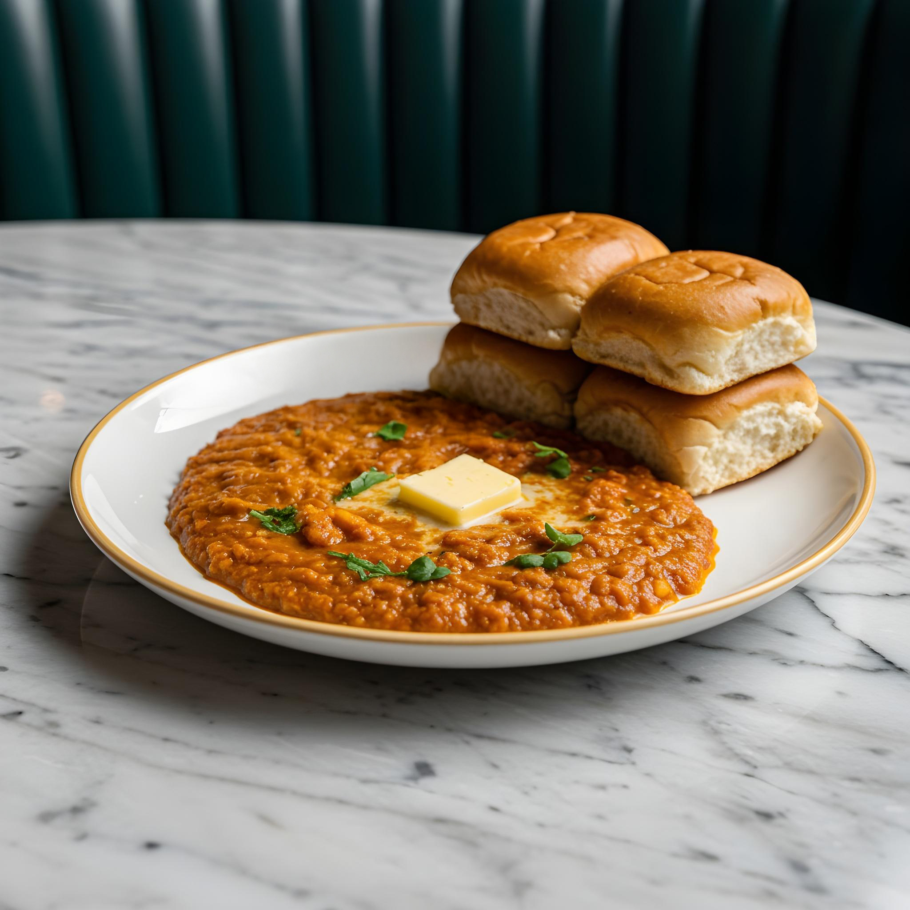

Pav Bhaji Recipe
This is a delicious pav bhaji recipe that you can try at home. Follow the steps below to make a perfect pav bhaji.

Description
Pav Bhaji is a popular Indian street food dish that consists of a spicy vegetable mash (bhaji) served with buttered bread rolls (pav). The bhaji is made by cooking a mixture of vegetables such as potatoes, tomatoes, peas, and bell peppers with spices and butter. It is typically garnished with chopped onions, coriander leaves, and a squeeze of lemon juice. Pav Bhaji is best enjoyed hot and is often served with a side of buttered pav and a dollop of butter on top.
Ingredients
- potatoes
- tomatoes
- peas
- bell peppers
- spices
- butter
- chopped onions
- coriander leaves
- lemon juice
- buttered bread rolls (pav)
Steps
- Step 1: Cook the vegetables to make the bhaji.
- Step 2: Prepare the buttered bread rolls (pav).
- Step 3: Garnish the bhaji with chopped onions, coriander leaves, and a squeeze of lemon juice.
- Step 4: Serve the bhaji with the buttered pav and a dollop of butter on top.
- Step 5: Add Pav Bhaji masala, salt, and the mashed vegetables.
- Step 6: Mix everything well and cook for a few minutes, adding a little water if needed.
- Step 7: Heat a pan and toast the pav bread with butter until lightly golden.
- Step 8: Serve the hot bhaji with buttered pav, chopped onions, coriander, and lemon.